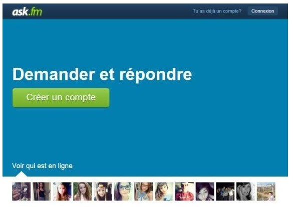
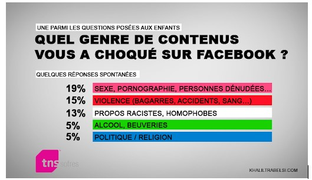

Harcèlement : 3 étapes pour se protéger, se défendre ou aider un(e) ami(e) victime :
- Tout d'abord, parlez-en ! Le harceleur continuera s'il sent que vous restez enfermé dans cette situation. Vous ne devez absolument pas rester seul avec vos angoisses et votre mal-être. Confiez-vous à quelqu'un, proche (amis, parents...) ou non (CPE, infirmière scolaire de votre établissement, médecin, dans un Point Jeunes...). Si vous êtes harcelé sur votre portable ou via les réseaux sociaux, vous pouvez en parallèle changer de numéro et fermer vos différents comptes, au moins temporairement. Lignes d'écoute. • Non au harcèlement au 3020 pour dialoguer avec des spécialistes [ veuillez rejoindre notre espace psychiatre pour plus d’informations] qui vous donneront des conseils et vous mettront en relation avec le « référent harcèlement » de votre académie en cas de besoin.
- La deuxième étape consiste à identifier ce à quoi vous êtes confronté. S'agit-il réellement de harcèlement ou d'un règlement de compte ? Il faut évaluer la gravité de la situation pour alerter les autorités compétentes si besoin. Appuyez-vous aussi sur le jugement des personnes à qui vous avez parlé de ce que vous subissez. Ne sous-estimez jamais ce qu'il vous arrive : dès l'instant où vous le vivez mal et que vous vous sentez persécuté, il est important d'en parler même si vous n'êtes pas sûr qu'il s'agisse vraiment de harcèlement.
- La dernière étape consiste à faire un travail psychologique sur vous-même, afin de savoir pourquoi vous êtes attaqué. Il faut comprendre pourquoi ça vous touche autant. Le mieux est de vous rendre dans un centre médico-psychologique, une Maison des adolescents, un Point Accueil et Ecoute Jeunes... Vous y serez reçu gratuitement."
Conseils à suivre :
Comment réagir si on est témoin de harcèlement ?
- Il faut avant tout en parler à la personne que vous pensez harcelée pour la couper de son isolement.
- En fonction de ce qu'elle vous aura confié ou de vos observations, essayez de vous faire une idée de la situation (s'agit-il d'un simple règlement de compte ou bien de harcèlement ?) et des répercussions qu'elle peut avoir sur la victime.
- Allez ensuite en parler directement à l’harceleur pour lui dire ce que vous pensez de son attitude. Si vous avez peur de vous confronter seul à lui, parlez-en à des amis pour qu'ils vous accompagnent.
- Si c'est grave ou vous vous apercevez que cela continue, vous devez alerter des adultes pour que les autorités compétentes interviennent. Vous avez le devoir de porter assistance aux personnes en danger.
Réseaux sociaux : attention aux dérives !
Vous connaissez le réseau Ask.fm ? Le principe : vous répondez à des questions posées par des interlocuteurs anonymes, sauf s’ils choisissent de s’identifier. Évidemment, cela peut conduire à des dérives comme la diffusion d'informations personnelles, la publication de contenu offensant, le cyber-harcèlement... D'ailleurs, le réseau social a été récemment sous le feu des critiques après le suicide d'adolescents victimes de cyber-harcèlement par son biais.
Quels que soient les réseaux sociaux que vous utilisez, soyez vigilant et n'hésitez pas à fermer votre compte en cas de souci.
